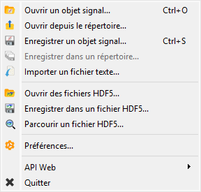
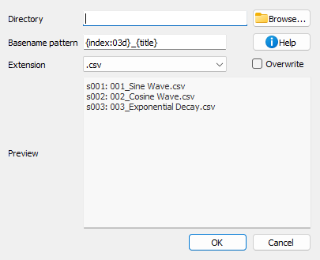
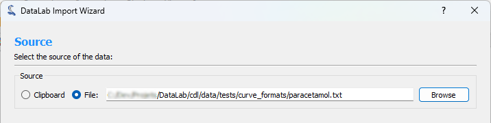
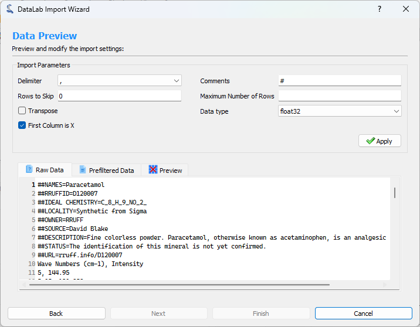
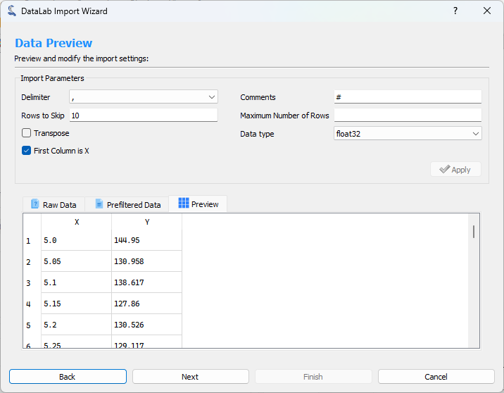
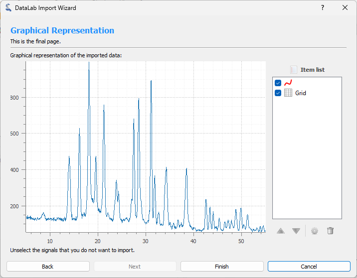

Ouvrir et enregistrer des signaux#
Cette section décrit comment ouvrir et enregistrer des signaux (et des espaces de travail).
Note
Pour créer de nouveaux signaux à partir de modèles mathématiques, voir Créer des signaux.

Capture d’écran du menu « Fichier ».#
Lorsque le « Panneau Signal » est sélectionné, les menus et barres d’outils sont mis à jour pour fournir les actions liées aux signaux.
Le menu « Fichier » vous permet de :
Ouvrir, enregistrer et fermer des signaux (voir ci-dessous).
Sauvegarder et restaurer l’espace de travail actuel ou parcourir les fichiers HDF5 (voir Vue d’ensemble).
Modifier les préférences de DataLab (voir Préférences).
Ouvrir un signal#
Crée un signal depuis l’un des types de fichiers pris en charge :
Type de fichier |
Extensions |
|---|---|
Fichiers texte |
.txt, .csv |
Tableaux NumPy |
.npy |
Fichiers MAT |
.mat |
Fichiers FT-Lab |
.sig |
Ouvrir depuis un répertoire#
Ouvrir plusieurs signaux depuis un répertoire spécifié.
Enregistrer un signal#
Enregistre le signal sélectionné dans l’un des types de fichier pris en charge :
Type de fichier |
Extensions |
|---|---|
Fichiers texte |
.csv |
Enregistrer les signaux dans un répertoire#
Enregistrer tous les signaux sélectionnés dans un répertoire spécifié, avec un patron de nom de fichier et un format de signal configurables.

Boîte de dialogue Enregistrer les signaux dans un répertoire.#
Lorsque vous sélectionnez « Enregistrer dans un répertoire… » dans le menu Fichier, une boîte de dialogue apparaît où vous pouvez :
Répertoire : Choisissez le répertoire cible où les signaux seront enregistrés.
Nom de fichier : Définissez un modèle pour les noms de fichiers en utilisant des chaînes de format Python.
Extension de fichier : Sélectionnez le format de sortie (.csv, .txt, etc.).
Écraser : Choisissez si vous souhaitez écraser les fichiers existants.
Aperçu : Voir la liste des fichiers qui seront créés (avec les ID d’objet)
Le modèle de nom de fichier prend en charge les espaces réservés suivants :
{title}: Signal title{index}: 1-based index of the signal in the selection (with zero-padding){count}: Total number of selected signals{xlabel},{xunit},{ylabel},{yunit}: Axis labels and units{metadata[key]}: Access metadata values
You can also use format modifiers, for example {index:03d} will format the index
with 3 digits zero-padding (001, 002, 003, etc.).
Importer un fichier texte#
DataLab peut importer nativement des fichiers de signaux (par exemple CSV, NPY, etc.). Cependant, certains formats de fichiers texte spécifiques peuvent ne pas être pris en charge. Dans ce cas, vous pouvez utiliser la fonctionnalité « Importer un fichier texte », qui vous permet d’importer un fichier texte et de le convertir en signal.
Cette fonctionnalité est accessible depuis le menu « Fichier », sous l’option « Importer un fichier texte ».
Il ouvre un assistant d’importation qui vous guide tout au long du processus d’importation du fichier texte.
Etape 1 : Sélectionner la source#
La première étape consiste à sélectionner la source du fichier texte. Vous pouvez soit sélectionner un fichier de votre ordinateur, soit le presse-papiers si vous avez copié le texte à partir d’une autre application.

Etape 1 : Sélectionner la source#
Etape 2 : Aperçu et configuration de l’importation#
La deuxième étape consiste à configurer l’importation et à prévisualiser le résultat. Vous pouvez configurer les options suivantes :
Délimiteur : Le caractère utilisé pour séparer les valeurs dans le fichier texte.
Commentaires : Le caractère utilisé pour indiquer que la ligne est un commentaire et doit être ignorée.
Lignes à sauter : Le nombre de lignes à sauter au début du fichier.
Nombre maximum de lignes : Le nombre maximum de lignes à importer. Si le fichier contient plus de lignes, elles seront ignorées.
Transposer : Si coché, les lignes et les colonnes seront transposées.
Type de données : Le type de données de destination des données importées.
La première colonne est X : Si coché, la première colonne sera utilisée comme axe X.
Lorsque vous avez terminé de configurer l’importation, cliquez sur le bouton « Appliquer » pour voir le résultat.

Etape 2 : Configurer l’importation#

Etape 2 : Prévisualiser le résultat#
Etape 3 : Afficher la représentation graphique#
La troisième étape montre une représentation graphique des données importées. Vous pouvez utiliser le bouton « Terminer » pour importer les données dans l’espace de travail de DataLab.

Etape 3 : Afficher la représentation graphique#